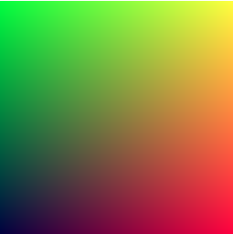

Ray Tracing in One Weekend - 1
《Ray Tracing in One Weekend》是Peter Shirley的Ray Tracing三部曲中的第一本。本节是阅读Ray Tracing in One Weekend时所做的笔记，当前的版本是3.2.3。主要目的是对Ray Tracing有个基本概念的认知，实验代码已上传至我的仓库。
Overview
当大家提起Ray Tracing时，可能指不同的东西。而在这里，Ray Tracing是指Path Tracer，这也是最常见的释义。
我在什么是Ray-Tracing(光线追踪)技术中，找到了一个容易理解的描述: 光线追踪是一种渲染技术，其算法可以跟踪光的传播路径，模拟光源的各个方面以及光在三维环境中发生的反射，漫射，折射等特性，生成更逼真的渲染场景。
本书会带领我们一步步的实现一个Ray Tracing, 最后会得到一个能渲染出漂亮图片的光线追踪器。一些关于本书的额外的资源被上传到这个网站中。
Output an Image
The PPM Image Format
在我们开始写renderer前，我们需要能够看到我们渲染出来的文件。有很多种图片格式，也都挺复杂的。所以我们可以从ppm文件开始。以下是wiki对ppm的介绍：

以下代码用于生成一个简单的ppm文件：
1 |
|
注意：
- 以上代码的像素点，每行从左往右写；
- 以上代码的像素点，每列从上往下写；
- 颜色值范围被约定为(0.0 , 1.0], 这个约定在后续处理中不会被改变，即使在内部使用了high dynamic range。
- 下方的红色从左到右由黑到红，左侧的绿色从上到下由黑到绿，右上角应该是黄色。
Creating an Image File
现在只需要将cout流重定向到文件中即可，我们用>来重定向输出流。
在windows中命令如下：1
inOneWeekend.exe > image.ppm
windows下如果找不到合适的软件打开ppm格式，可以使用ppm viewer在线查看。
注：翻看原仓库的图片时发现原作者用的也是png格式，所以blog里贴都是实验截图。
生成图像如下：

Adding a Progress Indicator
加入一个进度条来查看程序是否进入死循环是个好办法。
图片信息的写入使用标准流std::cout，所以我们使用std::cerr来输出进度。
1 | std::cerr << "\rScanlines remaining: " << j << ' ' << std::flush; |
The vec3 class
几乎所有图形学的程序都有这样的class来存储geometric vetors和coloes。在很多系统中都使用了4维的向量（3D plus a homogeneous coordinate for geometry, and RGB plus an alpha transparency channel for colors)。在我们的场景下，三维足够了。我们用vec这个类来存储颜色，位置，方向，偏移量等等。有些人不太喜欢，因为它不能避免你做蠢事，比如颜色和位置相加。他们想得有道理，但当没有明显错误时，我们尽量精简代码。尽管如此，我们还是给vec3两个aliases:point3和color。因为这两种给类型只是vec3的别名，所以当你将color传递给期待points3的函数时，也不会有警告。我们使用他们是为了明确意图和用法。
Variables and Methods
第一小节创建了vec3类，并在类中重载了一些运算符，例如-, +=, *=等等。
vec3 Utility Functions
第二小节中在类外，也重载vec3了一些运算符。如<<, +/-/*/\, dot, cross等等。
Color Utility Functions
第三小节为vec3类写了一个输出单个像素点颜色的方法，并在main.cc中使用这种方法来输出像素点。
Rays, a Simple Camera, and Background
The ray Class
所有的ray tracer都会有一个ray类并计算沿光线所见的颜色。我们用一个方程
函数
1 |
|
Sending Rays Into the Scene
现在我们可以绕回来做我们的ray tracer。本质上，ray tracer通过像素发射ray，并计算沿着这些ray的方向所见的颜色。这包括以下几个步骤：
- 计算从视点到像素的ray。这里的视点指的是ray tracer的观察点或者相机位置。在ray tracer中我们模拟了现实中的相机，该相机位于场景中的某个位置，通过这个位置来观察场景;
- 确定光线与哪个物体相交(intersects);
- 计算相交点(intersection point)的颜色。
在初步开发Ray tracer时，我们通常实现一个简单的相机，以便代码快点跑起来。我还会编写一个简单的ray_color(ray)函数，用于返回背景的颜色(一个简单的渐变色)。
我在调试正方形的图像时常常遇到麻烦，因为我总是混淆x和y，所以我们使用非正方形的图像。现在我们使用16:9的宽高比，因为这是常见的比例。
除了为渲染图像设置像素尺寸外，我们还需要设置一个virtual viewport(虚拟视口)，通过这个viewport传递我们的场景光线。对于标准的正方形的像素点，viewport的宽高比应与渲染图像的相同。我们将选择一个高度为两个unit的视口。我们还将设置投影平面和投影点之间的距离为一个unit。这被称为focal length - 焦距，不要和后面要介绍的focus distance - 焦点距离混淆。
我将把”eye”（视点）（如果你认为是相机的话，就是相机中心）放在坐标(0, 0, 0)处。我让y轴朝上，x轴朝右。为了符合右手坐标系，负z轴的方向指向屏幕。我从屏幕的左上角开始遍历，并使用两个偏移向量沿着屏幕的边缘移动光线的终点位置。请注意，这里我没有将光线的方向向量归一化为单位长度，因为我认为这样会使代码更简单，而且稍微快一点。

在下面的代码中，ray会大约指向像素中心（暂时不用担心精度问题，之后我们会添加antialiasing（反走样））。
ray_color(ray)函数根据y值将蓝色白色做了线性混合，我们这里把ray的方向做了单位化，以保证y的取值范围(-1.0 < y < 1.0)。因为我们是在对向量进行归一化后查看y坐标，所以除了垂直渐变之外，还应该会有水平渐变。（这里画个图计算一下同一水平上的两个点和origin构成的向量被单位化之后的y值就可以理解了）
然后我使用了一个技巧将t的范围缩放到(0.0 < y < 1.0)。当t = 1.0时，我想要蓝色。当t = 0 的时候，我想要白色。在两者之间就得到混合色。这就形成了两者之间的一个linear blend或者linear interpolation或者简写为lerp。lerp的表达式常如以下形式：
当t从0到1变化时，我们得到以下图像：